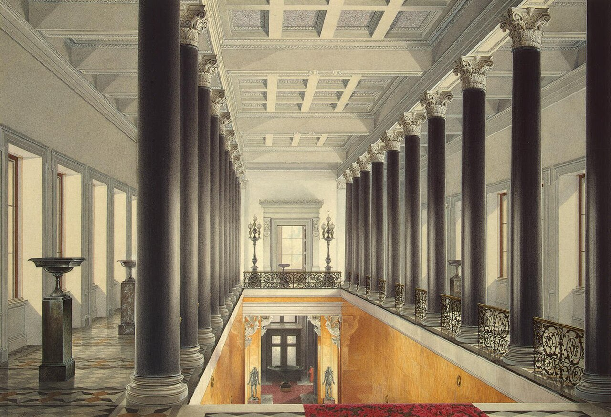

TRIPROTARVISOR
La Venezia del Nord

Museo dell'Ermitage
È il museo più grande della Russia e forse del mondo: conserva più di 3 milioni di opere e ogni anno ci passano oltre 2,5 milioni di visitatori. Però non siamo entrati per vedere un museo qualsiasi, siamo entrati per contare gli edifici.
Tutto comincia nel 1764, quando Caterina II, che allora aveva 34 anni e un marito imperatore che passava più tempo in guerra che a casa, comprò a Berlino una prima collezione di 225 quadri. Da quel momento la principessa volle sempre di più, fino a diventare la zarina con la galleria più ricca del suo impero.
Cinque edifici, non uno
- Palazzo d'Inverno, il palazzo degli zar in barocco
- Piccolo Ermitage, costruito appositamente per la collezione
- Grande Ermitage, la parte più antica
- Teatro dell'Ermitage, ricostruito dopo un incendio nel 1787
- Nuovo Ermitage, l'edificio modernista dei primi del Novecento
Detto "Hermitage" in francese vuol dire ritiro: era il posto dove lo zar non lo disturbava nessuno, e i corridoi fra un edificio e l'altro sono lunghi e larghi come delle strade.
Cosa vedere se avete poco tempo
I dipinti da non perdere sono quelli di Caravaggio, Raffaello, Leonardo, Van Gogh, Matisse e Rembrandt. Le Logge di Raffaello, invece, non sono quadri veri: sono copie degli affreschi che Raffaello fece a Roma, fatte a mosaico e messe in un corridoio circolare al primo piano del Nuovo Ermitage.
Il palazzo più sontuoso è il Palazzo d'Inverno, progettato da Bartolomeo Rastrelli, lo stesso architetto italiano che ha firmato il Winter Palace. L'ha chiamato così l'imperatrice Elisabetta, per via delle finestredecorate a gelo, che da sole occupano un piano intero.
Il biglietto conviene comprarlo online: la coda all'ingresso del Palazzo d'Inverno d'estate arriva anche a un'ora. Noi ci siamo stati di mattina presto e la sala di gala era semivuota, cosa che di pomeriggio non succede quasi mai.